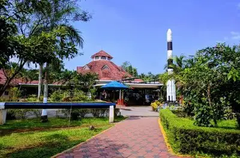
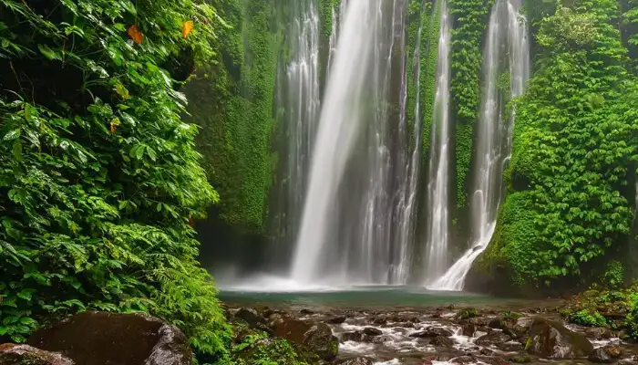

1.Kozhikkode beach
location

Of all the best beaches Kozhikode is famous for, Calicut beach happens to be an ideal location for tourists who want to unwind themselves from the stress and pollution of the city. If you are keen to discover the river in Kerala, this is one of the perfect places to see in Kozhikode that you need to add to your itinerary. The beach not only offers the best sunrise and sunset views but every year in January, the beach also plays a great host to one of the biggest festivals called the Malabar Mahotsavam.
2.Mananchira square
location
Situated in the heart of the city, the Mananchira Square tops the Calicut tourist places list. The Mananchira Square features a clearwater pool at the centre surrounded by temples, churches, and ancient homes built all around the square. Apart from that, one must visit the musical fountain, open stage, and theatre where regular shows are held to depict the historical lives of kings and palaces.
3.Kozhippara falls
location
The stunning Kozhippara Falls is located on the borders of Kakkadampoyli at the district division of Malappuram and Calicut. You will encounter numerous trekking groups here. The serene ambiance of this falls enhances the beauty of this place. Whether interested in adventurous excursions such as swimming and trekking or looking forward to witnessing the mystic beauty of Kozhikode, this place will surely surprise you with numerous experiences.